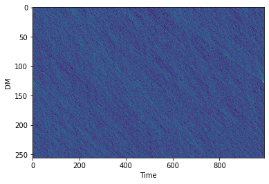
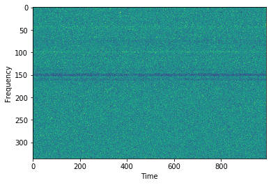
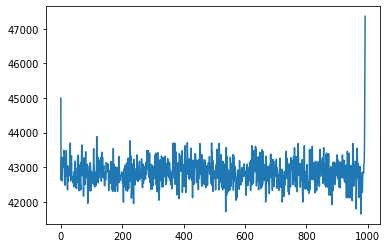
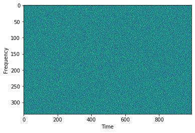
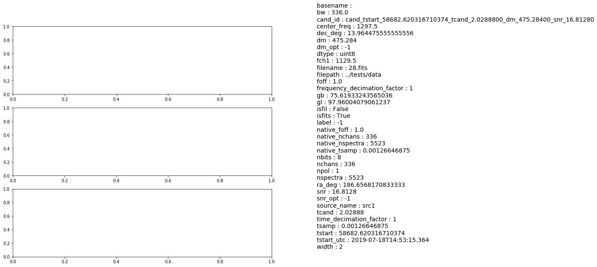

View in Colab :octicons-octoface: GitHub source
How to use Candidate class in Your to analyze candidates
from your.candidate import Candidate
from your.utils.plotter import plot_h5
import numpy as np
from scipy.signal import detrend
import os
os.environ['HDF5_USE_FILE_LOCKING'] = 'FALSE'
%matplotlib inline
import pylab as plt
import logging
logger = logging.getLogger()
logger = logging.basicConfig(level=logging.INFO, format='%(asctime)s - %(name)s - %(threadName)s - %(levelname)s -'
' %(message)s')
Here is the heimdall output from our file:
S/N, Sample, Time, Width, DM trial, DM, Members, Start Sample, End Sample
88.6941 6305 0.826 1 34 56.838 295 6304 6308
First, we make the candiate object
# creating the candidate object with a certain dm, label, snr, tcand and width
fits_file = os.path.join('../tests/data/28.fits')
cand = Candidate(fp=fits_file, dm=475.28400, tcand=2.0288800, width=2, label=-1, snr=16.8128, min_samp=256, device=0)
# cand = Candidate(fp=f'Stokes_512I.dat.fil', dm=56.838, label=1, snr=88.694, tcand=0.826, width=2**1)
# Get data, this will take data from the filterbank file, and can be accessed from cand.data:
cand.get_chunk()
print(cand.data, cand.data.shape,cand.dtype)
[[133 135 141 ... 130 126 110]
[159 118 145 ... 143 114 124]
[158 142 122 ... 129 158 108]
...
[160 141 120 ... 142 113 114]
[136 107 146 ... 103 113 120]
[160 141 146 ... 113 133 139]] (992, 336) <class 'numpy.uint8'>
# here is our dispersed pulse
plt.imshow(cand.data.T,aspect='auto',interpolation=None)
plt.ylabel('Frequency')
plt.xlabel('Time')
plt.show()
# Now let's make the DM Time plot. This may take a while.
cand.dmtime()
Using <class 'str'>:
../tests/data/28.fits
# the DM time plot can be accessed using cand.dmt. Let's have a look:
plt.imshow(cand.dmt, aspect='auto',interpolation=None)
plt.ylabel('DM')
plt.xlabel('Time')
plt.show()

# Now let's Dedisperse it!
cand.dedisperse()
Using <class 'str'>:
../tests/data/28.fits
# The dedispersed pulse can be obtained using cand.dedispersed
plt.imshow(cand.dedispersed.T,aspect='auto',interpolation=None)
plt.ylabel('Frequency')
plt.xlabel('Time')
plt.show()

plt.plot(cand.dedispersed.T.sum(0))
[<matplotlib.lines.Line2D at 0x7f12d811f4a8>]

# Detrending can be used to remove bandpass variations
plt.imshow(detrend(cand.dedispersed.T),aspect='auto',interpolation=None)
plt.ylabel('Frequency')
plt.xlabel('Time')
plt.show()

# Optimise dm could be used to obtain accurate value of dm, and snr at that dm (under testing)
cand.optimize_dm()
print(f'Heimdall reported dm: {cand.dm}, Optimised DM: {cand.dm_opt}')
print(f'Heimdall reported snr: {cand.snr}, SNR at Opt. DM: {cand.snr_opt}')
Heimdall reported dm: 475.284, Optimised DM: 474.7613272736851
Heimdall reported snr: 16.8128, SNR at Opt. DM: 13.458578109741211
# for now, let's enter some random values for dm_opt and snr_opt
cand.dm_opt = -1
cand.snr_opt = -1
# Name of the candidate
cand.id
'cand_tstart_58682.620316710374_tcand_2.0288800_dm_475.28400_snr_16.81280'
# Now let's save our candidate in an h5
fout=cand.save_h5()
print(fout)
2020-08-12 20:46:36,370 - your.candidate - MainThread - INFO - Saving h5 file cand_tstart_58682.620316710374_tcand_2.0288800_dm_475.28400_snr_16.81280.h5.
cand_tstart_58682.620316710374_tcand_2.0288800_dm_475.28400_snr_16.81280.h5
# We will use h5plotter to plot the candidate h5 we just generated
plot_h5(fout, detrend_ft=False, save=False)
---------------------------------------------------------------------------
ValueError Traceback (most recent call last)
<ipython-input-32-2167bde86e0d> in <module>
1 # We will use h5plotter to plot the candidate h5 we just generated
----> 2 plot_h5(fout, detrend_ft=False, save=False)
~/anaconda3/envs/grbfrb/lib/python3.6/site-packages/your-0.4.9-py3.6.egg/your/utils/plotter.py in plot_h5(h5_file, save, detrend_ft, publication, mad_filter, outdir)
153 ax4.axis('off')
154
--> 155 ax1.plot(ts, freq_time.sum(0), 'k-')
156 ax1.set_ylabel('Flux (Arb. Units)')
157 ax2.imshow(freq_time, aspect='auto', extent=[ts[0], ts[-1], fch1, fch1 + (nchan * foff)], interpolation='none')
~/anaconda3/envs/grbfrb/lib/python3.6/site-packages/matplotlib/axes/_axes.py in plot(self, scalex, scaley, data, *args, **kwargs)
1663 """
1664 kwargs = cbook.normalize_kwargs(kwargs, mlines.Line2D._alias_map)
-> 1665 lines = [*self._get_lines(*args, data=data, **kwargs)]
1666 for line in lines:
1667 self.add_line(line)
~/anaconda3/envs/grbfrb/lib/python3.6/site-packages/matplotlib/axes/_base.py in __call__(self, *args, **kwargs)
223 this += args[0],
224 args = args[1:]
--> 225 yield from self._plot_args(this, kwargs)
226
227 def get_next_color(self):
~/anaconda3/envs/grbfrb/lib/python3.6/site-packages/matplotlib/axes/_base.py in _plot_args(self, tup, kwargs)
389 x, y = index_of(tup[-1])
390
--> 391 x, y = self._xy_from_xy(x, y)
392
393 if self.command == 'plot':
~/anaconda3/envs/grbfrb/lib/python3.6/site-packages/matplotlib/axes/_base.py in _xy_from_xy(self, x, y)
268 if x.shape[0] != y.shape[0]:
269 raise ValueError("x and y must have same first dimension, but "
--> 270 "have shapes {} and {}".format(x.shape, y.shape))
271 if x.ndim > 2 or y.ndim > 2:
272 raise ValueError("x and y can be no greater than 2-D, but have "
ValueError: x and y must have same first dimension, but have shapes (256,) and (992,)
<Figure size 432x288 with 0 Axes>

Reshaping Freq-time and DM-time arrays
dedispersed_bkup = cand.dedispersed
dmt_bkup = cand.dmt
print(f'Shape of dedispersed (frequency-time) data: {dedispersed_bkup.T.shape}')
print(f'Shape of DM-time data: {dmt_bkup.shape}')
Shape of dedispersed (frequency-time) data: (512, 338)
Shape of DM-time data: (256, 338)
time_size = 256
freq_size = 256
Using resize in skimage.transform for reshaping
#resize dedispersed Frequency-time array along time axis
cand.resize(key='ft', size=time_size, axis=0, anti_aliasing=True)
#resize dedispersed Frequency-time array along time axis
cand.resize(key='ft', size=freq_size, axis=1, anti_aliasing=True)
logging.info(f'Resized Frequency-Time data to fsize: {freq_size} and tsize: {time_size}')
print(f'Shape of dedispersed (frequency-time) data: {cand.dedispersed.T.shape}')
2019-02-21 04:22:57,780 - root - MainThread - INFO - Resized Frequency-Time data to fsize: 256 and tsize: 256
Shape of dedispersed (frequency-time) data: (256, 256)
#resize DM-time array along time axis
cand.resize(key='dmt', size = time_size, axis=1, anti_aliasing=True)
logging.info(f'Resized DM-Time to dmsize: 256 and tsize: {time_size}')
print(f'Shape of DM-time data: {cand.dmt.shape}')
2019-02-21 04:22:59,386 - root - MainThread - INFO - Resized DM-Time to dmsize: 256 and tsize: 256
Shape of DM-time data: (256, 256)
Using decimate for reshaping
from candidate import crop
cand.dedispersed = dedispersed_bkup
cand.dmt = dmt_bkup
# Let's use pulse width to decide the decimate factor by which to collape the time axis
pulse_width = cand.width
if pulse_width == 1:
time_decimate_factor = 1
else:
time_decimate_factor = pulse_width // 2
# Decimating time axis, and cropping to the final size
cand.decimate(key='ft', axis=0, pad=True, decimate_factor=time_decimate_factor, mode='median')
crop_start_sample_ft = cand.dedispersed.shape[0] // 2 - time_size // 2
cand.dedispersed = crop(cand.dedispersed, crop_start_sample_ft, time_size, 0)
# Decimating frequency axis
cand.decimate(key='ft', axis=1, pad=True, decimate_factor=cand.dedispersed.shape[1]//freq_size, mode='median')
logging.info(f'Decimated Frequency-Time data to fsize: {freq_size} and tsize: {time_size}')
print(f'Shape of dedispersed (frequency-time) data: {cand.dedispersed.T.shape}')
2019-02-21 04:22:59,924 - root - MainThread - INFO - Decimated Frequency-Time data to fsize: 256 and tsize: 256
Shape of dedispersed (frequency-time) data: (256, 256)
# Reshaping the DM-time using decimation
# Decimating time axis and croppig to the final required size
cand.decimate(key='dmt', axis=1, pad=True, decimate_factor=time_decimate_factor, mode='median')
crop_start_sample_dmt = cand.dmt.shape[1] // 2 - time_size // 2
cand.dmt = crop(cand.dmt, crop_start_sample_dmt, time_size, 1)
logging.info(f'Decimated DM-Time to dmsize: 256 and tsize: {time_size}')
print(f'Shape of DM-time data: {cand.dmt.shape}')
2019-02-21 04:23:01,290 - root - MainThread - INFO - Decimated DM-Time to dmsize: 256 and tsize: 256
Shape of DM-time data: (256, 256)